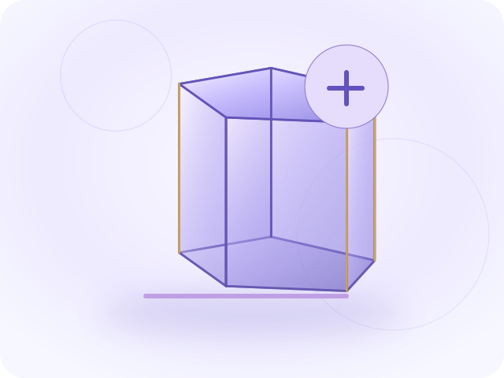
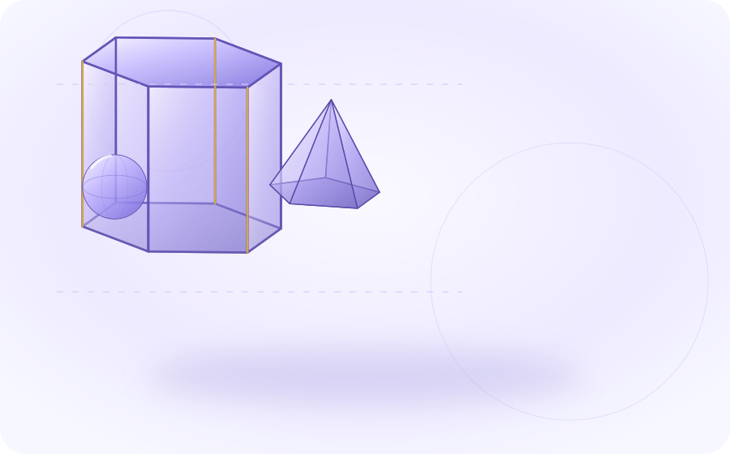
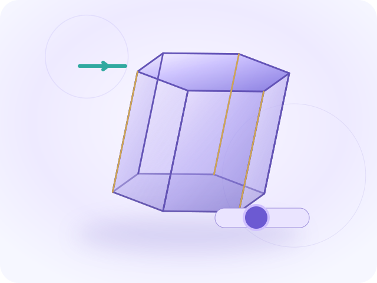

Aprender
Avanza por explicaciones claras del Profesor Xavier. Cada paso destaca las partes importantes de la figura.
Explora prismas, pirámides y otros sólidos con modelos que puedes girar y transformar. Aprende con el Profesor Xavier, descubre las fórmulas y resuelve problemas paso a paso.

Primero entiende la forma, después experimenta con sus dimensiones y finalmente aplica las fórmulas.

Avanza por explicaciones claras del Profesor Xavier. Cada paso destaca las partes importantes de la figura.

Modifica lados, alturas e inclinaciones. Observa en vivo los cambios geométricos y matemáticos.

Aplica área y volumen en problemas desarrollados paso a paso, con fórmulas matemáticas legibles.
Cada familia de sólidos tiene su propio laboratorio y controles específicos.
Aún no has empezado. La ruta comienza con puntos, rectas y planos.
Cada módulo se apoya en el anterior. Abre un módulo para ver sus lecciones; el progreso se actualiza a medida que completas ejercicios y retos.
Tu avance se guarda en este dispositivo, sin pedir una cuenta. Si borras los datos del navegador, también se borrará tu progreso; puedes exportar una copia.
Tres decisiones pedagógicas sostienen todo el material.
Cada teorema incluye su justificación. Antes de la fórmula hay una imagen mental y un caso concreto. Así la fórmula deja de ser algo que memorizar y pasa a ser algo que puedes reconstruir en el examen.
Altura contra arista lateral, área contra volumen, radio contra diámetro, perpendicularidad mal aplicada. Los errores frecuentes aparecen explícitamente con el motivo de por qué fallan.
Los cálculos de los ejercicios se comprueban por una segunda vía, y los distractores de opción múltiple corresponden a errores reales, no a números aleatorios. Hay una página de autocomprobaciones abierta.
 PrismasRectos, oblicuos y bases poligonales
PrismasRectos, oblicuos y bases poligonales PirámidesVértice, apotema y caras laterales
PirámidesVértice, apotema y caras laterales